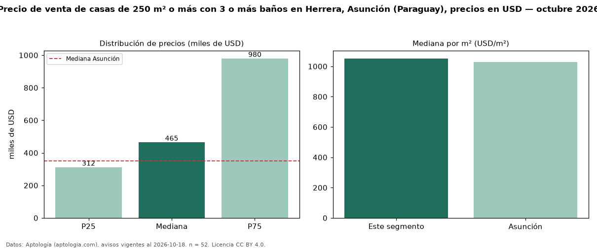

Precio de venta de casas de 250 m² o más con 3 o más baños en Herrera, Asunción (Paraguay), precios en USD — octubre 2026
En Herrera, Asunción (Paraguay), la mediana de precio de venta de casas de 250 m² o más con 3 o más baños es USD 465.000, según 52 avisos vigentes. Frente a la mediana de las casas de 250 m² o más en venta de Herrera (USD 420.000, n = 103), queda 11 % por encima; este segmento reúne el 50 % de esos avisos. Por metro cuadrado, la mediana es USD 1.052/m² (n = 52), 11 % por encima de las casas de 250 m² o más en venta de Herrera (USD 950/m²). La mitad central de los avisos va de USD 311.625 a USD 980.000 (razón 3,1), una dispersión alta. El área mediana anunciada es 480 m². El segmento con más oferta es el de 3 o más habitaciones (47 avisos, mediana USD 590.000). La mediana de todas las casas en venta de Asunción es USD 350.000 (+33 % de diferencia). Datos: Aptología (aptologia.com), CC BY 4.0 — https://www.aptologia.com/py/venta/asuncion/herrera. Archivos: PDF, CSV con las cifras y gráfica PNG.

| Avisos únicos | 52 |
|---|---|
| Percentil 25 | COP 311.625 |
| Mediana | COP 465.000 |
| Percentil 75 | COP 980.000 |
| Mediana por m² | COP 1.052 |
Fuente: avisos vigentes de portales inmobiliarios recopilados por Aptología, deduplicados (mínimo 30 avisos únicos por celda). Precios pedidos, no cerrados. Fecha: 2026-10-18.